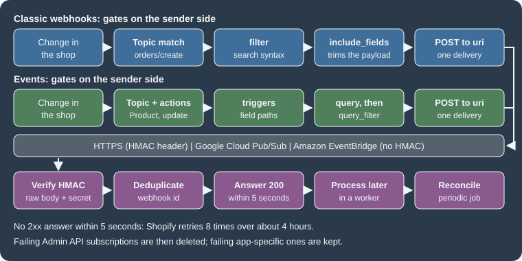

Webhooks and Events
|
This content was generated with the assistance of AI and should be verified against the official documentation before being relied on in production. |
This page was written against the GraphQL Admin API version 2026-10 (the latest stable version, released on
2026-10-01), Shopify CLI 5.0.0, @shopify/shopify-app-react-router 4.0.0 (the public app template still depends on
^3.0.1) and @shopify/shopify-api 15.0.1, and checked on 2026-10-27. Webhooks and Events are available on every
Shopify plan, because they belong to the app and not to the merchant’s plan. What a subscription may receive is bounded
by the access scopes of the app, and topics that carry personal data additionally need the protected customer data
approval that is described in the page on
authentication and access scopes.
A Shopify app that only reads data when a merchant opens it is easy to build. Most useful apps also need to react when something happens in the shop: an order is placed, a price changes, a customer asks to be forgotten, the app is uninstalled. Polling the Admin API for every one of those would waste the app’s rate limit and would still be late. Shopify therefore offers two push mechanisms, classic webhooks and the newer Events, and this page explains both: how a subscription is declared, which gates decide whether a delivery is sent, how to prove that a delivery really comes from Shopify, how to answer it so that it is not retried, which three webhook topics every App Store app must handle, and how Events change the model. It sits after the page on authentication and access scopes (which supplies the client secret used to sign deliveries) and before the pages on the Admin GraphQL API and bulk operations, whose finish notification is itself a webhook.
The running example is the Pocket Coffee shop (Spanish and English storefronts, the single-origin beans product with 18 variants, the Coffee Club group and the "order placed" logger). Its companion app logs every new order with the order number and the total, reacts when the price of a bean variant changes, and answers the three compliance webhooks.
Two facts about the state of the documentation at the check date are worth knowing before reading older material. First,
Events are described by Shopify as the successor to classic webhooks, but webhooks "remain fully supported" and both can
live in the same shopify.app.toml. Second, the general API versioning page still lists Events among the surfaces that
are only "available in the unstable version", while the Events guides and the developer changelog of 2026-10-01 say they
are generally available with API version 2026-10; this page follows the Events documentation and the changelog.
This page was prepared without a Shopify account, so no real delivery was ever received from Shopify. What did run
locally is listed in What was run and what was not: the shopify.app.toml build with the CLI, the GraphQL documents
validated against the downloaded 2026-10 schema, the HMAC computation in three languages, a Node receiver, and three
React Router route handlers of the official app template that were exercised with requests signed by a placeholder
secret.
Webhooks and Events at a glance
Both mechanisms follow the same five steps: declare a subscription (a topic and a destination), narrow which changes qualify, let Shopify send a delivery when a qualifying change happens, verify the delivery, and act on it. They differ in how much control each step gives you.

| Classic webhooks | Events (Next Gen Events) | |
|---|---|---|
Topic format |
A string such as |
A capitalised resource name such as |
Where it is configured |
|
|
Which changes qualify |
Every change of the topic. Narrowed afterwards by |
|
Suppressing a delivery |
|
|
Payload |
A fixed, REST-shaped JSON document, optionally trimmed with |
Metadata ( |
Topic coverage |
Every Shopify resource (236 topics in the 2026-10 Admin schema). |
A growing subset of Admin GraphQL objects (18 topics at general availability). |
Request header prefix |
|
|
Verification |
HMAC-SHA256 of the raw body in |
The same algorithm in |
Delivery destinations |
HTTPS, Google Cloud Pub/Sub, Amazon EventBridge. |
HTTPS, Google Cloud Pub/Sub, Amazon EventBridge. |
Source: Shopify: Events and webhooks
The number of topics in the table comes from the WebhookSubscriptionTopic enum of the Admin GraphQL schema for
2026-10, introspected on 2026-10-27; the count of Events topics comes from the general availability announcement.
Delivery destinations
Every subscription has a uri, and the form of the uri selects the delivery method.
| Method | uri value |
Notes |
|---|---|---|
HTTPS |
An absolute |
Shopify sends an HTTP |
Google Cloud Pub/Sub |
|
Grant the Shopify service account |
Amazon EventBridge |
The partner event source ARN, |
Associate the event source with an event bus in the AWS console first. |
A relative path is the practical choice during development. shopify app dev runs a tunnel whose URL changes at every
start, and a subscription whose uri is the relative path /webhooks/orders/create follows the tunnel automatically, while an absolute
URL would have to be rewritten each time. The CLI’s own schema message lists one more accepted form, kafka://<topic-id>,
that the public guides do not describe, so this page does not rely on it.
Cloud event buses carry the delivery metadata inside the message instead of in HTTP headers, and they do not need HMAC verification, but the messages contain extra fields beyond the sample payloads of the webhooks reference. When a destination is an event bus, the receiver is a normal Pub/Sub or EventBridge consumer rather than a web route.
Subscription types
Classic webhooks can be subscribed in two ways, and mixing them for the same topic produces duplicate notifications.
| App-specific | Shop-specific | |
|---|---|---|
Defined in |
|
The GraphQL Admin API ( |
Compliance topics |
Supported. |
Cannot be subscribed through the Admin API; they can be configured in the app configuration file. |
Metafield namespaces |
Not supported. An Events |
|
Topics |
Every topic except |
Every topic. |
Failing subscription |
Never deleted by Shopify. |
Deleted by Shopify after repeated failures. |
Where to see it |
Dev Dashboard, Versions, Configuration, Subscriptions. Shown as "config-managed" in the logs. |
Query |
Scopes |
Declared in the app configuration file. |
Declared in the configuration file or the Dev Dashboard, never through the Admin API. |
Choose app-specific subscriptions unless the topics, destinations or filters have to differ from shop to shop. A custom
app created in the Shopify admin cannot use the CLI tooling, so it cannot use shopify.app.toml; it has to create its
shop-specific subscriptions with the Admin API and its own access token. When an app moves from shop-specific to
app-specific subscriptions, it first deletes its existing subscriptions to the same topics (list them with the
webhookSubscriptions query, remove the code that created them, run shopify app deploy, check the Versions page of the
Dev Dashboard) and only then adds the declarative ones.
Declaring webhook subscriptions in shopify.app.toml
| Field | Required | Meaning |
|---|---|---|
|
Yes |
The GraphQL Admin API version used to serialise the payloads of every app-specific subscription, for example |
|
Yes, unless |
One or more topic names. Several topics in one subscription route all of them to the same |
|
Yes |
The destination: an HTTPS URL, a relative path, a Pub/Sub URI or an EventBridge ARN. |
|
No |
Array of field paths. When set, the payload contains only those fields. Nested fields use a period, for example
|
|
No |
A search-syntax expression. A delivery whose payload does not satisfy it is not sent. Available since API version 2024-07. |
|
No |
A label echoed in the |
|
No |
Any of |
Source: Shopify: App configuration
The Pocket Coffee app declares the following file. It subscribes to app/uninstalled (so the app can delete its sessions),
logs new orders with a trimmed payload, watches price changes of the bean variants with a filter, and answers the three
compliance topics.
client_id = "00000000000000000000000000000000"
name = "pocket-coffee-app"
application_url = "https://example.invalid"
embedded = true
[access_scopes]
scopes = "read_products,read_orders"
[auth]
redirect_urls = ["https://example.invalid/api/auth"]
[webhooks]
api_version = "2026-10"
[[webhooks.subscriptions]]
uri = "/webhooks/app/uninstalled"
topics = ["app/uninstalled"]
[[webhooks.subscriptions]]
name = "orders-create"
uri = "/webhooks/orders/create"
topics = ["orders/create"]
include_fields = ["id", "name", "total_price", "updated_at"]
[[webhooks.subscriptions]]
name = "beans-price"
uri = "/webhooks/products/update"
topics = ["products/update"]
include_fields = ["id", "status", "variants.id", "variants.sku", "variants.price", "updated_at"]
filter = "status:active AND variants.price:>=8.90"
[[webhooks.subscriptions]]
uri = "/webhooks/compliance"
compliance_topics = ["customers/data_request", "customers/redact", "shop/redact"]Three details of the file deserve a comment. read_orders is the scope that orders/create requires (every topic lists
its required scope in the webhooks reference), and because it exposes personal data it is also subject to the protected
customer data review. The client_id and the URLs are placeholders. The filter and the include_fields of the
products/update subscription are consistent: every field the filter refers to (status, variants.price) also appears
in include_fields, which Shopify requires when both are set.
How a change reaches Shopify depends on where the file is applied. While shopify app dev runs, a saved change updates
the subscriptions of the development store automatically. For production, the configuration is part of an app version:
run shopify app deploy, which creates and releases a version, or shopify app deploy --no-release to create the
version and have Shopify validate it without releasing it. Changing api_version follows the same path, and Shopify
recommends moving to the latest stable version every quarter. Before changing it, send sample payloads of the new
version to the handler with shopify app webhook trigger --api-version=<new-version>; subscriptions keep using the old
version until the new configuration is deployed.
What the offline build checks
shopify app build --no-input validates shopify.app.toml without logging in. The file above was built with Shopify CLI
5.0.0 on 2026-10-27 and printed pocket-coffee-app built!. Mutated copies of the same file show which mistakes the CLI
catches offline and which are left to Shopify’s servers at deploy time.
| Change to the file | Result of the offline build |
|---|---|
|
Rejected with an "Invalid enum value" error that lists the three valid compliance topics. |
A subscription without |
Rejected: |
|
Rejected: the URI must be a relative path starting with a slash, an HTTPS URL, a |
An Events |
Rejected: a handle can contain only letters, digits, underscores and hyphens. |
A misspelled topic ( |
Accepted. Topic names are validated by Shopify. |
|
Accepted. |
|
Accepted, although the documented character set is letters, digits, |
|
Accepted. |
An Events subscription with |
Accepted, although the guides say |
|
Accepted, although the guides say a |
A |
Accepted. |
A subscription that sets both |
Accepted. |
Source: Shopify: App configuration
The practical rule is that a green offline build proves the TOML syntax and a handful of enumerations, not the
semantics. Topic names, trigger paths, filter fields and query complexity are checked by Shopify when the version is
deployed, and shopify app deploy --no-release is the way to run those checks without publishing the change. That
command needs a logged-in CLI and an app, so it was not run for this page.
Trimming and filtering webhook deliveries
A bare subscription to products/update fires for every product change (a title edit, a tag, a variant price) and
sends the full REST-shaped product. Two optional fields reduce both the volume and the size.
include_fields
include_fields lists the paths to keep. For the beans subscription, ["id", "status", "variants.id", "variants.sku",
"variants.price", "updated_at"] turns a product of several kilobytes into a short document:
{
"id": 9554194432293,
"status": "active",
"variants": [
{
"id": 123456789,
"sku": "PC-ETH-WHL-250",
"price": "9.90"
}
],
"updated_at": "2026-10-27T10:00:00+01:00"
}The same option exists in the Admin API as includeFields. One side effect surprises people: when include_fields
reduces the payload to a few fields, consecutive events can produce identical payloads, and Shopify debounces identical
payloads that arrive within a short window, dropping the later one. A subscription to orders/updated with
include_fields = ["id", "line_items.title"] would therefore swallow consecutive price changes. Always include a field
that changes with every update, such as updated_at, when every update matters.
filter
filter uses the Shopify API search syntax, with AND, OR and parentheses, and is evaluated against the payload at
delivery time using current values.
filter = "status:active AND (product_type:Beans OR product_type:Equipment) AND variants.price:>=8.90"The filter looks like a search query but behaves differently in four ways, summarised by Shopify.
filter |
Search | |
|---|---|---|
Invalid field |
No deliveries are sent. |
All documents are returned. |
|
Equality. |
Fuzzy match when fields are tokenised. |
Field specification |
The field must be named; free terms are not supported. |
Term searches are supported. |
Case |
Case-sensitive. |
Case-insensitive. |
Further rules from the guide:
-
A field that holds an array of objects matches when at least one element matches (
line_items.properties.name:_giftdelivers when any line item has such a property). -
variantsis a top-level array of the product payload. If any single variant satisfies the filter, the webhook fires for any update of that product, including unrelated ones such as a title edit. -
Tags are serialised as one comma-separated string in topics such as
products/updateandorders/updated, so a tag filter is a keyword match on that string rather than a membership test. -
A filter is validated when the subscription is created: wrong syntax prevents creation, while an invalid field or a type mismatch lets the subscription be created and then suppresses every delivery, which looks like a silent failure.
-
If
include_fieldsis also set, every field named in the filter must appear ininclude_fields. -
The
metaobjects/create,metaobjects/updateandmetaobjects/deletetopics require a filter on the definition’s type,type:<type>, without wildcards. For app-owned definitions the full typeapp--<app-id>--<namespace>must be used, not the$app:shorthand.
Shop-specific subscriptions with the Admin API
When the destination or the topics depend on the shop, an app creates subscriptions at runtime with the
webhookSubscriptionCreate mutation. The topic is passed as the enum value in screaming case (ORDERS_CREATE).
mutation webhookSubscriptionCreate($topic: WebhookSubscriptionTopic!, $webhookSubscription: WebhookSubscriptionInput!) {
webhookSubscriptionCreate(topic: $topic, webhookSubscription: $webhookSubscription) {
userErrors {
field
message
}
webhookSubscription {
id
format
includeFields
metafieldNamespaces
topic
uri
}
}
}The variables select the topic and the destination. This example (with placeholders) subscribes a shop to new orders and keeps only the fields the Pocket Coffee logger prints:
{
"topic": "ORDERS_CREATE",
"webhookSubscription": {
"uri": "https://example.com/webhooks/orders/create",
"format": "JSON",
"name": "orders-create",
"includeFields": ["id", "name", "total_price", "updated_at"]
}
}The mutation was validated against the Admin GraphQL schema for 2026-10 downloaded on 2026-10-27, together with a query that lists the existing subscriptions before a migration to app-specific ones:
query ExistingSubscriptions {
webhookSubscriptions(first: 25) {
nodes {
id
topic
uri
filter
includeFields
createdAt
}
}
}Source: Shopify: webhookSubscriptions
Both documents validate against the schema. Reading the same schema gives several facts that are easy to get wrong from memory:
-
WebhookSubscriptionInputhas the fieldsformat,includeFields,filter,metafieldNamespaces,metafields,nameanduri.formatisJSONorXML. -
The
WebhookSubscriptionTopicenum has 236 values in 2026-10. None of them is a compliance topic:CUSTOMERS_REDACT,CUSTOMERS_DATA_REQUESTandSHOP_REDACTdo not exist, which is the schema-level reason why compliance webhooks cannot be created through the API. -
On the
WebhookSubscriptionobject,callbackUrlandendpointare deprecated in favour ofuri. -
Since 2025-08-08
webhookSubscriptionCreateandwebhookSubscriptionUpdateaccept every kind of URI, so the endpoint-specific mutationspubSubWebhookSubscriptionCreate,pubSubWebhookSubscriptionUpdate,eventBridgeWebhookSubscriptionCreateandeventBridgeWebhookSubscriptionUpdateare deprecated. They are still present in the 2026-10 schema. -
The version of a shop-specific subscription is the version in the request URL (
POST /admin/api/2026-10/graphql.json), not a field of the subscription.
A shop-specific subscription that fails eight consecutive deliveries is deleted by Shopify, so the app has to check
that its subscriptions still exist (for example in its afterAuth hook or in a nightly job) and recreate the missing
ones. In the React Router template the same result is expressed with the webhooks option of shopifyApp and
registerWebhooks, which wraps the mutation:
const shopify = shopifyApp({
webhooks: {
ORDERS_CREATE: {
deliveryMethod: DeliveryMethod.PubSub,
pubSubProject: "<GCP-PROJECT>",
pubSubTopic: "<PUB_SUB_TOPIC>",
},
},
hooks: {
afterAuth: async ({ session }) => {
shopify.registerWebhooks({ session });
},
},
});The Admin API itself is covered in the page on the Admin GraphQL API. The older REST Admin API also had a webhooks resource; REST has been a legacy API since 2024-10-01 and new public apps have had to use GraphQL only since 2025-04-01, so new code should use the mutation above or the TOML file.
What a delivery looks like
For an HTTPS destination, Shopify sends an HTTP POST with a JSON body and metadata in headers. Header names are case
insensitive (HTTP/2 lowercases them), so a receiver must never compare them case-sensitively.
| Header | Meaning |
|---|---|
|
The topic, for example |
|
The base64 HMAC-SHA256 of the raw body, signed with the app’s client secret. HTTPS only. |
|
The |
|
The API version that serialised the payload. |
|
A unique composite key per delivery. Use it to deduplicate. |
|
When Shopify triggered the delivery. |
|
An id shared by all deliveries produced by the same merchant action. If two subscriptions match the same event, the two deliveries have different webhook ids and the same event id. |
|
The |
The payload is, by default, the full REST resource of the topic, with REST-style numeric ids and snake_case field names,
whatever the API version is; the version changes which fields exist. The webhooks reference lists the payload of every
topic. Payloads do change between versions, and the changelog shows the kind of change to watch for: on 2026-03-06 the
checkout_id field was removed from the orders/create, orders/updated, orders/paid, orders/cancelled,
orders/fulfilled, orders/partially_fulfilled and orders/link_requested payloads (use checkout_token), and
checkouts/create and checkouts/update lost their id (use token); from API version 2026-10 order webhooks include
selling_plan_id on line items.
Three behaviours of the delivery system shape how a receiver must be written.
-
Ordering is not guaranteed, neither within a topic nor across topics of the same resource: a
products/updatecan arrive before theproducts/createof the same product. UseX-Shopify-Triggered-Ator theupdated_atof the payload to order events. -
Delivery is not guaranteed. Handler failures, downtime and the retry limit can all lose an event, so an app should run reconciliation jobs that periodically fetch data changed since the last run. Many Admin API queries accept an
updated_atfilter for exactly this. -
Duplicates happen. Shopify minimises them, but a network timeout or a retry can send the same delivery twice.
Verifying deliveries
Anyone who knows the URL of the endpoint can send it a request that looks like a webhook. The HMAC header is what separates Shopify from everyone else, and a handler must verify it before it reads anything from the body.
The algorithm
-
Take the raw bytes of the request body, exactly as received.
-
Compute HMAC-SHA256 over them, using the app’s client secret as the key.
-
Base64-encode the 32-byte digest.
-
Compare it, in constant time, with the value of the HMAC header.
-
Reject the request with
401 Unauthorizedwhen they differ or when the header is missing.
The key is the client secret of the app (the "API secret key"), not an access token and not a per-shop value. When the client secret is rotated, it can take up to an hour before deliveries are signed with the new secret, so a receiver that rotates secrets has to accept both for a while.
The computation is deterministic, so it can be cross-checked with any tool. With the placeholder secret
placeholder-client-secret and the compliance payload of a shop/redact request as the file body.json (no trailing
newline), three independent implementations print the same digest:
printf '{"shop_id":954889,"shop_domain":"pocket-coffee.myshopify.com"}' > body.json
openssl dgst -sha256 -hmac 'placeholder-client-secret' -binary body.json | base64
node -e 'console.log(require("crypto").createHmac("sha256","placeholder-client-secret").update(require("fs").readFileSync("body.json")).digest("base64"))'
python3 -c 'import hmac,hashlib,base64;print(base64.b64encode(hmac.new(b"placeholder-client-secret",open("body.json","rb").read(),hashlib.sha256).digest()).decode())'Output of all three (run on 2026-10-27, OpenSSL being LibreSSL 3.3.6, Node 24.21.0):
Ly27oLW7vrIn11zMR7sXZfecjGr8L7Rm9rvF8d0fBx0=A receiver in plain Node
The official page shows an Express handler. The version below uses only Node’s http and crypto modules so that it can
run anywhere, and differs from the official snippet in one important detail: crypto.timingSafeEqual throws a
RangeError when the two buffers have different lengths, so a request with a short or garbage header would crash the
handler (or turn into a 500) if the lengths were not compared first.
import http from "node:http";
import crypto from "node:crypto";
const CLIENT_SECRET = process.env.SHOPIFY_API_SECRET ?? "placeholder-client-secret";
// Verify the base64 HMAC-SHA256 of the raw body, in constant time.
export function verifyHmac(rawBody, headerValue, secret = CLIENT_SECRET) {
if (typeof headerValue !== "string" || headerValue.length === 0) return false;
const expected = crypto.createHmac("sha256", secret).update(rawBody).digest();
const received = Buffer.from(headerValue, "base64");
// timingSafeEqual throws a RangeError when the lengths differ, so compare lengths first.
return received.length === expected.length && crypto.timingSafeEqual(received, expected);
}
const seen = new Set(); // use a persistent store (Redis, a database table) in production
const server = http.createServer((req, res) => {
const chunks = [];
req.on("data", (c) => chunks.push(c));
req.on("end", () => {
const raw = Buffer.concat(chunks); // keep the raw bytes: never re-serialise the JSON
const hmac = req.headers["x-shopify-hmac-sha256"] ?? req.headers["shopify-hmac-sha256"];
if (!verifyHmac(raw, hmac)) {
res.writeHead(401).end("HMAC validation failed");
return;
}
const id = req.headers["x-shopify-webhook-id"] ?? req.headers["shopify-webhook-id"];
if (seen.has(id)) {
res.writeHead(200).end("duplicate ignored");
return;
}
seen.add(id);
const topic = req.headers["x-shopify-topic"];
const payload = JSON.parse(raw.toString("utf8"));
console.log(` handler: topic=${topic} shop=${req.headers["x-shopify-shop-domain"]} payload keys=${Object.keys(payload)}`);
res.writeHead(200).end("ok");
});
});The receiver accepts both header spellings, which is how a single endpoint can serve classic webhooks and Events. It was
run on 127.0.0.1 with a small driver that posts a pretty-printed order (it contains the non-ASCII character in "café")
signed with the same placeholder secret. The seven scenarios and their results:
1 valid delivery -> 200 ok
2 same delivery again -> 200 duplicate ignored
3 tampered body -> 401 HMAC validation failed
4 wrong secret -> 401 HMAC validation failed
5 header of wrong size -> 401 HMAC validation failed
6 missing header -> 401 HMAC validation failed
7 re-serialised JSON -> 401 HMAC validation failed
unguarded timingSafeEqual throws: ERR_CRYPTO_TIMING_SAFE_EQUAL_LENGTHScenario 7 is the most common real-world bug: the body is parsed with JSON.parse and written back with
JSON.stringify before it is verified. The compact output has different bytes from the pretty-printed original, so the
signature no longer matches even though the data is the same. The last line shows what the length guard prevents.
Pitfalls that make valid deliveries fail
| Pitfall | What to do |
|---|---|
A body parser runs first ( |
Capture the raw body before parsing and verify that. Put the verification middleware before any body parser. Do not verify a re-serialised document. |
Wrong encoding |
Hash the bytes. Do not decode them to a string and re-encode them, and compare the digests after decoding the base64 of the header, not as text. |
Comparing with |
Use a constant-time comparison, after checking that the lengths are equal. |
Reading the header with an exact case |
HTTP/2 lowercases header names. Look headers up case-insensitively. |
Using an access token or the wrong app’s secret as the key |
The key is the client secret of the app that owns the subscription. A shop with two environments (development and production apps) has two secrets. |
Testing with the notification test button of the shop’s Notifications settings |
Those requests fail verification, and the shopify-api library says so in its debug log. Use |
Rotating the client secret |
Allow up to an hour of deliveries signed with the new secret. |
Big payloads in Events |
For an Events delivery that was replaced by a download URL, verify the HMAC of the small body that was delivered, not of the downloaded content (see Overflow payloads). |
Verification in the React Router template
The public app template does not verify anything by hand. authenticate.webhook(request) from
@shopify/shopify-app-react-router reads the raw body, validates the HMAC and the required headers, loads the offline
session of the shop when one exists, and returns a typed context. Its behaviour, read from the package source (the
implementation is byte-identical in versions 3.0.2, which the template installs, and 4.0.0), is:
| Situation | Result |
|---|---|
The request is not a |
Throws a |
The HMAC does not match |
Throws a |
Any other validation failure: a missing HMAC header, or a missing |
Throws a |
Valid |
Returns |
Source: Shopify: shopify-app-js packages
The library tells classic webhooks and Events apart by the HMAC header it finds (Shopify-Hmac-Sha256 for Events,
X-Shopify-Hmac-Sha256 otherwise), which is why one route can serve both. The session can be undefined after the app
was uninstalled, because Shopify still delivers webhooks that were already queued. The template’s own
webhooks.app.uninstalled route handles that explicitly: it deletes the shop’s sessions only when a session exists.
Because the functions throw Response objects, a route that calls authenticate.webhook needs no try block for the
common failures: React Router turns the thrown response into the HTTP answer.
A handler for orders that runs
The handler below belongs to the Pocket Coffee app. It authenticates the request, claims the webhook id so that a duplicate is acknowledged but not processed, and logs the order. The claim is a database insert that relies on the primary key, which makes it correct under concurrent deliveries (a check followed by an insert would not be).
// Idempotency keys: one row per webhook or event delivery that was already accepted.
model WebhookReceipt {
id String @id // X-Shopify-Webhook-Id (Shopify-Webhook-Id for Events)
topic String
shop String
receivedAt DateTime @default(now())
}// app/webhook-receipts.server.ts
import { Prisma } from "@prisma/client";
import db from "./db.server";
/**
* Records a delivery id. Returns true the first time an id is seen and false for a
* duplicate, so the caller can answer 200 and skip the work.
*/
export async function claimDelivery(
webhookId: string,
topic: string,
shop: string,
): Promise<boolean> {
try {
await db.webhookReceipt.create({ data: { id: webhookId, topic, shop } });
return true;
} catch (error) {
if (
error instanceof Prisma.PrismaClientKnownRequestError &&
error.code === "P2002"
) {
return false; // unique constraint: already processed
}
throw error;
}
}// app/routes/webhooks.orders.create.tsx
import type { ActionFunctionArgs } from "react-router";
import { authenticate } from "../shopify.server";
import { claimDelivery } from "../webhook-receipts.server";
export const action = async ({ request }: ActionFunctionArgs) => {
const { topic, shop, payload, webhookId } = await authenticate.webhook(request);
// Shopify can deliver the same webhook twice: process each id once.
if (!(await claimDelivery(webhookId, topic, shop))) {
return new Response(null, { status: 200 });
}
// The subscription uses include_fields = ["id", "name", "total_price", "updated_at"].
console.log(`order placed ${payload.name} total ${payload.total_price} (${shop})`);
return new Response(null, { status: 200 });
};The route lives next to the template’s own webhooks.app.uninstalled.tsx and webhooks.app.scopes_update.tsx; its URL
/webhooks/orders/create matches the uri of the subscription. The app/scopes_update handler of the template shows
another useful payload: its current array lists the scopes the app now has.
Answering a delivery: speed, retries and monitoring
Respond first, work later
Shopify treats any answer outside the 2xx range, including a 3xx redirect, as an error. It waits one second to connect and
five seconds for the whole request, and it reuses connections, so the endpoint should keep HTTP Keep-Alive enabled. The
rule that follows is simple: verify, deduplicate, store the payload (or put it on a queue) and answer 200 at once;
do the slow work in a worker. A compliance request that needs a database sweep, a price sync that calls another system
and an order export all belong in the worker.
Retries and removal
If Shopify gets no answer or an error, it retries eight times over the next four hours, with growing intervals. After the eight attempts it stops. A shop-specific subscription is then deleted and warning emails go to the app’s emergency developer address; an app-specific subscription is not deleted, but the deliveries that failed are lost unless the app reconciles. For a long outage:
-
Shop-specific subscriptions have to be created again (check which ones exist and create only the missing ones). App-specific subscriptions do not need to be recreated.
-
Import the data that changed during the outage by querying the Admin API for objects updated since the outage began and feeding them to the same processing code the handlers use.
Monitoring in the Dev Dashboard
For apps created in the Dev Dashboard or with the CLI, the app’s Overview page charts successful deliveries, the failure rate and the 90th percentile response time over a chosen range, and the Logs page lists individual deliveries of the last seven days, filterable by topic, status and shop. Each delivery shows the response code, the topic, the URI, the subscription method ("App specific" or the shop-specific subscription id), the API version, the webhook id, the response time, the attempt number and the HMAC and headers that were sent. The logs are not real time and can be delayed by several minutes. Shopify’s rules of thumb for what to fix first:
| Signal | Meaning |
|---|---|
Failed delivery rate above 0.5% |
Higher than average. Look for a store-specific or payload-specific error, especially if one topic stands out. |
Removed subscriptions |
The app is no longer receiving the topic. Fix the cause and recreate the subscription. |
Response times between four and five seconds |
The handler is about to time out. Answer first and process later. |
The same failure rate on every topic |
The backend is probably not responding; check the application monitoring. |
Source: Shopify: Troubleshoot webhooks
The mandatory compliance webhooks
Every app distributed through the Shopify App Store must subscribe to three compliance topics and handle them, whether or not the app stores personal data. They exist so that merchants can answer data subject requests under privacy laws such as the GDPR and the CPRA; Shopify applies one standard to every app, regardless of where the person lives. If the subscriptions or the handlers are missing, the app is rejected in review, and the problem has to be fixed before the next submission.
| Topic | When Shopify sends it | What the app must do |
|---|---|---|
|
A customer asks the merchant for the data stored about them. Only apps with access to customer or order data receive it. |
Give the merchant the data the app holds for the customer ids listed in the payload, directly (not in the HTTP answer). |
|
A merchant asks to delete a customer’s data. Sent 10 days after the request when the customer placed no order in the past six months; otherwise withheld until six months have passed. |
Delete or irreversibly anonymise the data of the customer and of the listed orders, unless the law requires retention. |
|
48 hours after the merchant uninstalls the app. |
Erase everything the app holds for the shop, including sessions and tokens. |
Source: Shopify: Privacy law compliance
The three payloads, with the shop and customer replaced by Pocket Coffee test values:
{
"shop_id": 954889,
"shop_domain": "pocket-coffee.myshopify.com",
"orders_requested": [299938, 280263, 220458],
"customer": { "id": 191167, "email": "ada@example.test", "phone": null },
"data_request": { "id": 9999 }
}{
"shop_id": 954889,
"shop_domain": "pocket-coffee.myshopify.com",
"customer": { "id": 191167, "email": "ada@example.test", "phone": null },
"orders_to_redact": [299938, 280263, 220458]
}Source: Shopify: Privacy law compliance
{
"shop_id": 954889,
"shop_domain": "pocket-coffee.myshopify.com"
}Source: Shopify: Privacy law compliance
The first is the customers/data_request payload, the second customers/redact and the third shop/redact. In some
customer records only the email address is present.
Requirements
The endpoint must satisfy four rules.
-
Accept
POSTrequests with a JSON body andContent-Type: application/json. -
Verify the HMAC exactly as for any other webhook and answer
401 Unauthorizedwhen it is invalid. Shopify’s requirements state that a request with an invalid signature must be refused. -
Answer with a 2xx status to confirm receipt.
-
Complete the action within 30 days of receiving the request. The one exception is a redaction that the app cannot carry out because the law requires it to keep the data; in that case it must not delete it.
Compliance topics are subscribed in the app configuration: the TOML file, or the version form of the Dev Dashboard. The
Admin API cannot create them (the enum has no such values, as shown earlier). They can be
sent to one endpoint with a single subscription, as the Pocket Coffee file does, or to three endpoints. The template ships
them commented out under the heading "Mandatory compliance topic for public apps only"; uncomment them and replace the
uri.
A compliance handler that runs
The Pocket Coffee app keeps a small Coffee Club note per customer, so it has something to return and to erase. The
handler authenticates the delivery, stores the request with its due date (30 days after receipt) and answers at once. A
nightly job (not shown) reads the unfinished rows, produces the export or performs the deletion, and sets doneAt. The
webhook id is the primary key, so a redelivered request collapses into the same row.
// Compliance requests are stored first and fulfilled later, within 30 days.
model ComplianceRequest {
id String @id // webhook id: duplicates collapse into one row
topic String
shop String
payload String
receivedAt DateTime @default(now())
dueAt DateTime
doneAt DateTime?
}// app/routes/webhooks.compliance.tsx
import type { ActionFunctionArgs } from "react-router";
import { authenticate } from "../shopify.server";
import db from "../db.server";
const THIRTY_DAYS_MS = 30 * 24 * 60 * 60 * 1000;
export const action = async ({ request }: ActionFunctionArgs) => {
// Throws a 401 Response when the HMAC is invalid and a 400 Response when
// required headers are missing, so nothing below runs for a forged request.
const { topic, shop, payload, webhookId } = await authenticate.webhook(request);
switch (topic) {
case "CUSTOMERS_DATA_REQUEST":
case "CUSTOMERS_REDACT":
case "SHOP_REDACT":
// Acknowledge quickly: store the request now, fulfil it from a background job.
await db.complianceRequest.upsert({
where: { id: webhookId },
update: {},
create: {
id: webhookId,
topic,
shop,
payload: JSON.stringify(payload),
dueAt: new Date(Date.now() + THIRTY_DAYS_MS),
},
});
return new Response(null, { status: 200 });
default:
return new Response("Unhandled compliance topic", { status: 400 });
}
};Source: Shopify: Privacy law compliance
The route handlers were type-checked inside a copy of the official React Router template (commit of 2026-10-09,
react-router typegen followed by tsc --noEmit, no errors) and executed with signed Request objects, using the
placeholder secret placeholder-client-secret and a local SQLite database. The results:
compliance customers/redact (valid) -> 200
compliance customers/redact (same id again) -> 200
compliance customers/redact (bad HMAC) -> 401 Unauthorized
compliance shop/redact (valid) -> 200
compliance, GET request -> 405 Method not allowed
compliance rows: [
'wh-c1 CUSTOMERS_REDACT due 2026-11-26',
'wh-c3 SHOP_REDACT due 2026-11-26'
]
order placed #1001 total 38.80 (pocket-coffee.myshopify.com)
orders/create (valid) -> 200
orders/create (duplicate id) -> 200
orders/create (missing topic header) -> 400 Bad RequestThe duplicate produced one stored row, not two, and the order was logged once. The forged request was rejected before
the handler ran. What was not run is the part that depends on Shopify: a real compliance delivery, which cannot be
triggered from a development store for customers/redact and shop/redact (they are sent after a delay), and the
review that checks the endpoint.
Testing compliance endpoints
shopify app webhook trigger sends a sample payload of any topic to an address of your choice, and it can sign it when
given the client secret, which makes it the right tool for these topics. It tests the handler, not the subscription:
Shopify states that triggering a webhook manually does not test that the subscription is configured correctly. See
Testing deliveries.
Next Gen Events
Events are Shopify’s second subscription mechanism. A webhook tells the app that "a product changed" and leaves the app to fetch what it needs and work out what changed. An Events subscription states which change the app cares about, what data it wants to receive with it, and which results it wants to be delivered, and Shopify does the filtering and the query before it sends anything. Events reached developer preview on 2026-05-27 and were declared generally available with API version 2026-10 on 2026-10-01.
The three gates
An Events subscription has three configurable gates, evaluated in this order:
-
topicandactionsdecide which resource and which lifecycle transitions are relevant. -
triggers(required whenactionsincludesupdate) list the field paths whose change qualifies an update. Multiple triggers are an implicit OR. -
queryruns a GraphQL Admin API operation after the change, and its result becomesdata;query_filterthen evaluates current values in that result and suppresses the delivery when the expression is false.
Triggers detect that something changed. The query selects what the app needs to know, independently of what changed (a change of one field can trigger a query that reads other fields). The query filter checks the state. A query filter cannot detect a transition by itself, because it sees current values and not before and after.
Subscription fields
| Field | Required | Meaning |
|---|---|---|
|
Yes |
The GraphQL Admin API version used to validate and run the subscription |
|
Yes |
A unique id for the subscription. Letters, digits, |
|
Yes |
The capitalised resource name, such as |
|
Yes |
Any of |
|
Yes |
HTTPS URL, relative path, Pub/Sub URI or EventBridge ARN. |
|
For |
Field paths. A parent trigger uses an explicit wildcard, such as |
|
No |
A GraphQL Admin API operation. Not limited to the topic’s resource; it can have several root fields. |
|
No (needs |
A search-syntax expression over the query result. Paths start at the same root as the query; there must be no space after the colon. |
Events require Shopify CLI 3.92 or later; the CLI used here is 5.0.0. They can be configured only in shopify.app.toml,
never through the Admin API, and unsupported topics fail validation when the app is deployed.
Topics at general availability
The 2026-10 announcement lists eighteen topics: Product and Collection; Customer and Company; Order,
FulfillmentOrder, Refund and Return; InventoryItem, InventoryShipment, InventoryTransfer and Location;
Article, Blog and Page; and MetafieldDefinition, Metaobject and MetaobjectDefinition. Each topic has its own
supported triggers, query variables and access scope (the Product topic needs read_products, Order needs one of
read_orders, read_marketplace_orders, read_buyer_membership_orders or read_quick_sale, Metaobject needs
read_metaobjects). The Events reference is the source of truth, and the trigger paths it lists, not the GraphQL schema,
are what validation checks. Derived fields (such as product.compareAtPriceRange) and auto-updated timestamps (such as
product.updatedAt) are not valid triggers because they have no independent change signal. Deprecated fields can still be
valid triggers. Every trigger of a Metaobject subscription must name the metaobject type with metaobject(type: '...').
Metafield triggers arrived on 2026-07-21 for Product, Order, Customer, Collection and Location (variant
metafields through the Product topic), with support for both $app-owned and ordinary metafields, subject to the app’s
access to the metafield. The page on metafields and metaobjects
describes the data these triggers watch.
A price-change subscription for Pocket Coffee
The Coffee Club discount depends on prices, so the app wants to know when the price of a bean variant changes, but only for active products and only for variants at or above the 250 g Ethiopia price (8.90 plus 1.00 is 9.90 EUR).
[events]
api_version = "2026-10"
[[events.subscription]]
handle = "beans-price-change"
topic = "Product"
actions = ["update"]
triggers = ["product.variants.price", "product.variants.compareAtPrice"]
uri = "/events/products"
query = """
query price_change($productId: ID!, $variantsId: ID!) {
product(id: $productId) {
id
title
status
}
productVariant(id: $variantsId) {
id
sku
price
compareAtPrice
}
}
"""
query_filter = "product.status:'ACTIVE' AND productVariant.price:>=8.90"This file (placed in the same shopify.app.toml as the webhook subscriptions above) built successfully with Shopify CLI
5.0.0. Its query was validated against the Admin 2026-10 schema as a standalone operation, and a copy with the typo prise
was rejected with Cannot query field "prise" on type "ProductVariant". Did you mean "price"? (the copy no longer
uses $productId, so the validator also reported that variable as unused). The query variables $productId and $variantsId are filled by Shopify:
ids flow up from the changed entity through its parents, so a variant change supplies both, while a change of a product
field such as the title supplies only $productId.
A subscription must therefore use only variables that every one of its triggers supplies. A subscription with the triggers
product.variants.price and product.title and a query that uses $variantsId is invalid, and Shopify answers
variantsId is not available in product.title. Split changes that need different variables into separate subscriptions.
What a delivery contains
For an Events delivery, the HTTP body is a JSON document with these fields.
| Field | Meaning |
|---|---|
|
The topic ( |
|
An object with the three arrays |
|
The resolved ids as flat variables ( |
|
Only with a |
|
Only with a |
A complete delivery of the subscription above, with Pocket Coffee values:
{
"topic": "Product",
"action": "update",
"handle": "beans-price-change",
"data": {
"product": {
"id": "gid://shopify/Product/1",
"title": "Single-origin beans",
"status": "ACTIVE"
},
"productVariant": {
"id": "gid://shopify/ProductVariant/2",
"sku": "PC-ETH-WHL-250",
"price": "9.90",
"compareAtPrice": null
}
},
"fields_changed": {
"added": [],
"updated": [
"product[id: 'gid://shopify/Product/1'].variants[id: 'gid://shopify/ProductVariant/2'].price"
],
"removed": []
},
"query_variables": {
"productId": "gid://shopify/Product/1",
"variantsId": "gid://shopify/ProductVariant/2"
}
}Source: Shopify: Events reference
The headers use the Shopify- prefix: Shopify-Topic, Shopify-Action, Shopify-Handle, Shopify-Api-Version,
Shopify-Webhook-Id, Shopify-Triggered-At, Shopify-Shop-Domain and Shopify-Hmac-Sha256, and the User-Agent is
Shopify-Captain-Hook. Two headers that earlier previews sent, shopify-event-id and shopify-resource-id, were removed
on 2026-09-16, so a receiver must not depend on them. Verification and deduplication follow exactly the webhook rules,
with Shopify-Hmac-Sha256 and Shopify-Webhook-Id; two subscriptions that match the same change produce two deliveries
with different webhook ids.
Overflow payloads
Each delivery channel has a size limit: 5 MB for HTTPS, 10 MB for Google Cloud Pub/Sub and 256 KB for Amazon
EventBridge. When the full content would exceed it, Shopify stores the content and sends a small body that contains only
topic, action, handle, payload_url, payload_size_bytes and expires_at. fields_changed, query_variables and
data are then found only in the download. Handlers have to be prepared for both shapes: check for payload_url first,
verify the HMAC on the small body (not on the download), fetch the content before it expires and treat the URL as a
short-lived credential. Keeping the query as small as the app needs also reduces the chance of overflow.
A handler for Events that runs
The route below is the Events counterpart of the orders handler. It authenticates the request with the same
authenticate.webhook, deduplicates, follows payload_url when present, checks errors and then reads the variant.
// app/routes/events.products.tsx
import type { ActionFunctionArgs } from "react-router";
import { authenticate } from "../shopify.server";
import { claimDelivery } from "../webhook-receipts.server";
type ProductPriceEvent = {
topic: string;
action: "create" | "update" | "delete";
handle: string;
data?: {
product: { id: string; title: string; status: string };
productVariant: { id: string; sku: string | null; price: string; compareAtPrice: string | null };
};
errors?: unknown[];
fields_changed?: { added: string[]; updated: string[]; removed: string[] };
query_variables?: Record<string, string>;
// Present instead of the fields above when the payload exceeded the channel limit.
payload_url?: string;
payload_size_bytes?: number;
expires_at?: string;
};
export const action = async ({ request }: ActionFunctionArgs) => {
const { topic, shop, payload, webhookId } = await authenticate.webhook(request);
if (!(await claimDelivery(webhookId, topic, shop))) {
return new Response(null, { status: 200 });
}
let event = payload as ProductPriceEvent;
if (event.payload_url) {
// Overflow payload: the HMAC covered this small body, the full content is a download.
const full = await fetch(event.payload_url);
event = { ...event, ...((await full.json()) as ProductPriceEvent) };
}
if (event.errors?.length) {
console.error("event query failed", event.handle, event.errors);
return new Response(null, { status: 200 });
}
const variant = event.data?.productVariant;
console.log(`price change ${variant?.sku}: ${variant?.price} (handle ${event.handle})`);
return new Response(null, { status: 200 });
};It was run with a delivery signed with the Shopify- headers, and it printed price change PC-ETH-WHL-250: 9.90 (handle
beans-price-change) and answered 200; a second delivery with the same Shopify-Webhook-Id answered 200 and printed
nothing. The overflow branch was type-checked but not exercised, because it needs a download URL.
Query limits
The query of an Events subscription has a complexity limit of 100 points. The limit was 250 points until the change
announced on 2026-09-22. Complexity follows the GraphQL cost rules: scalars and enums cost zero, objects one point, and
connections depend on first and last. The queries that Events run do not count against the app’s API rate limits.
Shopify checks the complexity when an app version is created, without executing the query or waiting for an event, so
shopify app deploy --no-release is the way to find out. If a query is over budget, the guidance is to split the
subscription by the work it does, to query the changed child directly (the variant, using $variantsId, rather than the
first 250 variants of the product), and to match each query to the variables its triggers provide. Several subscriptions
for the same topic, each with its own triggers and query, are allowed.
Naming collisions to be aware of
Three different things are called events in Shopify documentation. The Events surface described here is the next
generation of webhooks. The Admin API also has an Event interface (and a REST events resource) that records what
happened to a resource, and on 2026-01-27 access to that data was limited to one year; this has nothing to do with
Next Gen Events. Finally, the standard storefront events and the Web Pixels API are client-side analytics
events. Only the first can be subscribed to from shopify.app.toml.
Choosing between webhooks and Events
| Situation | Prefer | Why |
|---|---|---|
The resource has an Events topic and the app needs one field or a few related fields |
Events |
Triggers and query filters move the filtering into the subscription, and the query returns the related data with the change. |
The app needs to know which child was added or removed (a product joined a collection, a variant was removed) |
Events |
|
The topic is not in the list of Events topics (checkouts, carts, themes, app lifecycle, compliance, bulk operations) |
Webhooks |
Webhooks cover every Shopify resource; compliance topics exist only as webhooks. |
The subscription must differ per shop or be created at runtime |
Webhooks (shop-specific) |
Events can only be declared in |
The handler already works and the volume is low |
Webhooks, migrate one topic at a time |
Both can live in one |
Source: Shopify: Events and webhooks
The migration guide gives a repeatable procedure. First translate the fields the handler reads: REST names mostly become
camelCase GraphQL names, ids become global ids, and some fields change shape (for orders/create, financial_status
becomes displayFinancialStatus, price fields become money sets such as totalPriceSet { shopMoney { amount
currencyCode } }, and line items become connections with nodes). Then decide what triggers the subscription, because
a query selects data but never decides when a delivery fires. For create, query the new resource by id; for update,
choose the triggers; for delete, there is nothing to query, and the ids in query_variables identify what was
deleted. Finally, optimise the query to stay within 100 points, and validate it with shopify app deploy --no-release.
The general availability announcement uses collection membership as its example, and it is a good illustration of what a webhook cannot do without extra calls:
[events]
api_version = "2026-10"
[[events.subscription]]
handle = "collection-membership"
topic = "Collection"
actions = ["update"]
triggers = ["collection.products"]
uri = "/api/events/collections"
query = """
query CollectionMembership($collectionId: ID!, $productsId: ID!) {
collection(id: $collectionId) {
id
hasProduct(id: $productsId)
}
}
"""When product 456 joins collection 123, the delivery has action equal to update, fields_changed.added with the path
of the product in the collection, query_variables with both ids and data.collection.hasProduct equal to true, so
the search index of the app can be updated without fetching the collection’s product list. This query validates against
the 2026-10 schema.
Testing deliveries
There are four ways to exercise a handler, and they test different things.
| Method | What it tests | What it does not test |
|---|---|---|
Trigger the real event in a development store (create a product, place a test order) |
The whole chain: subscription, delivery, signature, handler. Most topics fire at once. |
|
|
The handler: Shopify sends a synthetic payload of the chosen topic and API version to your address. |
The subscription itself. Shopify says manually triggered webhooks do not test subscriptions. |
A signed request you build yourself, as in the Node and React Router examples above |
The verification and the business logic, offline and in automated tests. |
Anything about Shopify’s delivery behaviour. |
The Dev Dashboard logs |
What Shopify actually sent and what your endpoint answered, for the last seven days. |
Nothing before the delivery. |
The command is:
shopify app webhook trigger \
--topic orders/create \
--api-version 2026-10 \
--delivery-method http \
--address http://localhost:3000/webhooks/orders/create \
--client-secret "${SHOPIFY_API_SECRET}"Source: Shopify CLI: app webhook trigger
Its flags, read from the CLI 5.0.0 help text, are --topic, --api-version, --delivery-method (http,
google-pub-sub or event-bridge, inferred from the address when omitted), --address, --client-secret (used to
return the HMAC header so the receiver can validate the origin), --client-id or -c for the app configuration, --path,
--json, --no-input and --reset. In a non-interactive run, --topic, --api-version and --address are required.
For local testing use http://localhost:<port>/<path>;; for remote HTTP testing an https:// URL; for Pub/Sub
pubsub://<project-id>:<topic-id>; for EventBridge an ARN that starts with arn:aws:events:. The command needs a logged-in
CLI and an app, so it was not run for this page; only its help text was read. The environment variable holding the secret
is a placeholder reference and no value was used.
Troubleshooting
| Symptom | Likely cause and fix |
|---|---|
Every delivery is rejected with 401 |
The HMAC is computed on a parsed or re-serialised body, with the wrong secret, or the header is read with the wrong case. Verify the raw bytes with the client secret of the app that owns the subscription. |
Deliveries stopped and never came back |
A shop-specific subscription was deleted after eight failed deliveries. Recreate it and reconcile the missed data. |
Only some product updates arrive, or none |
An invalid field in |
A product update fires although the filter should block it |
|
Consecutive identical updates are missing |
Debouncing of identical trimmed payloads. Add |
The same order is processed twice |
The handler is not idempotent. Claim |
The handler times out although the work is small |
The answer must arrive within five seconds; move the work to a queue and answer first. |
The subscription exists in the Dev Dashboard but nothing arrives in development |
The tunnel URL changed. Use a relative |
|
A query variable is not supplied by every trigger. Split the subscription. |
An Events delivery has |
The query referenced a removed field or a deleted resource, or the app lacks the scope for a field. Log |
An Events delivery contains only |
The payload exceeded the channel limit. Download the content before |
A topic needs a scope the app does not have |
Add the scope to |
The app was rejected in review for compliance webhooks |
The three topics are not subscribed, the endpoint does not return 401 for a bad signature, or it does not accept a JSON
|
Source: Shopify: Troubleshoot webhooks
Pocket Coffee: putting it together
| Pocket Coffee need | Mechanism | Notes |
|---|---|---|
Log "order placed" with the number and total |
Webhook |
Handler claims the webhook id, logs |
React when a bean variant price changes to the Coffee Club threshold |
Event on |
One delivery per qualifying variant change, with SKU and price in |
Keep a search index of the Beans collection |
Event on |
|
Delete the app’s sessions when the merchant uninstalls |
Webhook |
The session can already be gone when a duplicate arrives; check for it. |
Answer a request from |
Compliance topic |
Stored on receipt, executed within 30 days. |
Erase a shop’s data after uninstall |
Compliance topic |
Arrives 48 hours after the uninstall. |
Notice that a bulk export finished |
Webhook |
Described in the page on bulk operations. |
Timeline
| Date | Change |
|---|---|
2024-07 |
Webhook |
2025-04-01 |
New public apps must use GraphQL only; webhook subscriptions are created with the GraphQL mutation or the TOML file. |
2025-08-08 |
|
2026-01-27 |
Access to the Admin |
2026-02-11 |
Webhook subscriptions get an optional |
2026-03-06 |
|
2026-05-27 |
Next Gen Events enter developer preview for |
2026-07-21 |
Events gain metafield triggers and the |
2026-08-26 |
Events gain |
2026-09-16 |
Events payloads change: |
2026-09-22 |
The complexity limit of an Events subscription query drops from 250 to 100 points. |
2026-10-01 |
Next Gen Events are generally available with API version 2026-10. Order webhooks gain |
2026-10-12 |
Cart operations that leave a cart unchanged no longer trigger |
Source: Shopify developer changelog
What was run and what was not
Run locally on 2026-10-27 (macOS, Node 24.21.0, Shopify CLI 5.0.0, no login, no store, only placeholder values):
-
shopify app build --no-inputon theshopify.app.tomlshown above (webhooks, compliance topics and an Events subscription), which succeeded, and on twelve modified copies, whose results are in the table of what the offline build checks. -
The mutation
webhookSubscriptionCreate, the querywebhookSubscriptionsand the Events queries for prices and collection membership, validated against the Admin GraphQL schema for 2026-10 downloaded anonymously (all valid), plus a misspelled query (rejected). The schema was also read for the topic count, the input fields and the deprecations. -
The HMAC computation with OpenSSL, Node and Python, and the Node receiver with seven request scenarios.
-
The three React Router route handlers (compliance, orders and Events), type-checked in a copy of the official template and executed with signed requests against a local SQLite database.
Not run, because they need a Shopify account, a store or an app registered with Shopify: shopify app deploy (including
--no-release validation of trigger paths and query complexity), shopify app dev, shopify app webhook trigger, any
delivery sent by Shopify, retries and removal of failing subscriptions, the Dev Dashboard monitoring, Google Cloud
Pub/Sub and Amazon EventBridge delivery, the overflow download of Events, and the App Store review of compliance
webhooks. Those parts are described from Shopify’s documentation as read on 2026-10-27. Client secrets, client ids and
shop domains in the examples are placeholders.
References
-
Shopify: Privacy law compliance (mandatory compliance webhooks)
-
Shopify changelog: Next Gen Events are generally available (2026-10-01)
-
Shopify changelog: Updates to Events payloads and subscription configuration (2026-09-16)
-
Shopify changelog: Events query complexity limit (2026-09-22)
-
Shopify changelog: webhookSubscriptionCreate supports all URI types (2025-08-08)